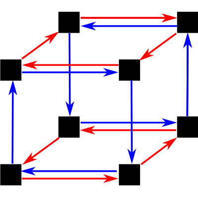
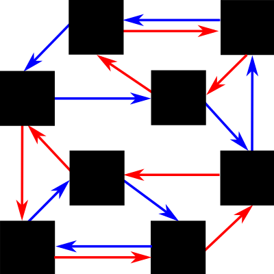

<!doctype html>
<html>
<head>
    <title>Experiment</title>
    <script src="https://ajax.googleapis.com/ajax/libs/jquery/1.11.1/jquery.min.js"></script>
    <script src="../util/group_theory.js"></script>
    <script src="../util/etc.js"></script>
    <script src="../jspsych/jspsych.js"></script>
    <script src="../jspsych/plugins/jspsych-instructions.js"></script>
    <script src="../jspsych/plugins/jspsych-survey-text.js"></script>
    <script src="../jspsych/plugins/jspsych-survey-likert.js"></script>
    <script src="../jspsych/plugins/jspsych-survey-multi-choice.js"></script>
    <script src="../jspsych/plugins/fractal-mutation-plugin.js"></script>
    <script src="../jspsych/plugins/two-door-navigation-plugin.js"></script>
    <script src="../jspsych/plugins/drag-drop-on-image-plugin.js"></script>
    <script src="../jspsych/plugins/drag-drop-on-image-plugin.js"></script>
    <script src="../jspsych/plugins/drag-drop-clustering-plugin.js"></script>
    <link href="../jspsych/css/jspsych.css" rel="stylesheet" type="text/css"></link>
    <link href="../css/other.css" rel="stylesheet" type="text/css"></link>
</head>
<body>
</body>
<script>
    var repeat_turker = false;
    var turk_info = jsPsych.turk.turkInfo();
    var worker_id = turk_info.workerId;

    var auxiliary_data; 

    var build_experiment = function() {

	var target_square_cycles = true; // will fractal task be square_cycles (otherwise odd_cycles) 
	var isomorphic = true; // will two tasks be isomorphic?
	var fractals_target = false; // will fractals be target task or doors?

	if (target_square_cycles) {
	    var this_group_target = new square_cycles();
	    if (isomorphic) {
		var this_group_source = new square_cycles();
	    } else {
		var this_group_source = new odd_cycles();
	    }
	} else {
	    var this_group_target = new odd_cycles;
	    if (isomorphic) {
		var this_group_source = new odd_cycles();
	    } else {
		var this_group_source = new square_cycles();
	    }
	}

	var this_fractal_assignment = ['../images/blu_wht.png', '../images/cyn_red.png', '../images/grn_red.png', '../images/gry_blk.png', '../images/org_blu.png', '../images/pnk_blu.png', '../images/ylw_pnk.png', '../images/ylw_slt.png']; 
	    
	var this_mutagen_assignment = [1, 0];
	var this_room_assignment = ["red", "green", "blue", "grey", "pink", "brown", "yellow", "purple"];
	var this_door_generator_assignment = [1, 0];
	var this_door_color_assignment = ["white", "black"];

        //console.log(this_room_assignment);

        if (target_square_cycles) {
            var this_group_target = new square_cycles();
            if (isomorphic) {
                var this_group_source = new square_cycles();
            } else {
                var this_group_source = new odd_cycles();
            }
        } else {
            var this_group_target = new odd_cycles;
            if (isomorphic) {
                var this_group_source = new odd_cycles();
            } else {
                var this_group_source = new square_cycles();
            }
        }

        var block_timeline = [
            {start: 2, goal: 0, progress: 0},
            {start: 0, goal: 3, progress: 2}
        ]

        var welcome_instructions = {
            type: 'instructions',
            show_clickable_nav: true,
            pages: [
                "Hi, welcome to the final session of our HIT. Thank you for returning!.",
                "As a reminder, this HIT contains two experiments, and should take about 30 minutes total. Because we need data from all four HITS, you were paid $2.50 for completing the first and $5 each for completing the second and third, and you will be paid $10 for this HIT, for a total of $22.50 if you complete all four.", // TODO: insert dates and payments
            ]
        }

	var debrief_instructions = {
	    type: 'instructions',
	    show_clickable_nav: true,
	    pages: [
		"Thanks, you've now completed both experiments for this session! We just have some final questions to ask you, and then you'll be done."
	    ]
	}

        if (fractals_target) {
	    var dragging_images = this_fractal_assignment.slice(); 
	    shuffle(dragging_images);
	    var diagram_dragging = {
		type: 'drag-drop-on-image',
		background_image: (target_square_cycles) ? "../images/diagrams/square_cycles.png" : "../images/diagrams/odd_cycles.png",
		dragging_images: dragging_images,
		target_locations: [{"x": 180, "y": 320}, {"x": 400, "y": 320},
                                   {"x": 500, "y": 220}, {"x": 281, "y": 220},
                                   {"x": 180, "y": 104}, {"x": 401, "y": 103},
                                   {"x": 500, "y": 0}, {"x": 280, "y": 0}],
		location_labels: [0, 1],
		preplaced_image: this_fractal_assignment[0],
		preplaced_image_location: 0, // This is the ``0'' location in the group_theory.js representation 
		instruction_text:"The fractal relationships in your experiment obeyed the structure above (black squares = fractals, red arrows = either acid or gamma ray, blue arrows = the other). Drag the fractals onto the black squares that you think they map onto (one has been placed to get you started)." 
	    }

	    var drag_clust = { 
		type: 'drag-drop-clustering',
		dragging_images: dragging_images,
		snap_padding: 10,
		instruction_text:"Drag the different fractals onto the grey part of the display in two or more groups that reflect how you thought about them as you were performing the task." 
	    }

	    var dragging_images_2 = this_fractal_assignment.slice(); 
	    shuffle(dragging_images_2);
	    var drag_corr_room_images = ["../images/room_snapshots/"+ this_room_assignment[0] + "_room_" + this_door_color_assignment[0] + "_left.png",
					 "../images/room_snapshots/"+ this_room_assignment[1] + "_room_" + this_door_color_assignment[0] + "_left.png",
					 "../images/room_snapshots/"+ this_room_assignment[2] + "_room_" + this_door_color_assignment[0] + "_left.png",
					 "../images/room_snapshots/"+ this_room_assignment[3] + "_room_" + this_door_color_assignment[0] + "_left.png",
					 "../images/room_snapshots/"+ this_room_assignment[4] + "_room_" + this_door_color_assignment[0] + "_left.png",
					 "../images/room_snapshots/"+ this_room_assignment[5] + "_room_" + this_door_color_assignment[0] + "_left.png",
					 "../images/room_snapshots/"+ this_room_assignment[6] + "_room_" + this_door_color_assignment[0] + "_left.png",
					 "../images/room_snapshots/"+ this_room_assignment[7] + "_room_" + this_door_color_assignment[0] + "_left.png"]
	    var drag_corr_room_order = range(drag_corr_room_images.length);
	    shuffle(drag_corr_room_order);
	    drag_corr_room_images = permute(drag_corr_room_images, drag_corr_room_order);

	    var drag_correspondence = {
		type: 'drag-drop-on-image',
		background_images: drag_corr_room_images,
		background_image_locations: [{"x": 200, "y": 120}, {"x": 300, "y": 120}, 
		    {"x": 400, "y": 120}, {"x": 500, "y": 120}, 
		    {"x": 200, "y": 210}, {"x": 300, "y": 210}, 
		    {"x": 400, "y": 210}, {"x": 500, "y": 210}],
		bg_image_height: 67,
		bg_image_width: 100,
		dragging_images: dragging_images_2,
		target_locations: [{"x": 210, "y": 120}, {"x": 310, "y": 120}, 
		    {"x": 410, "y": 120}, {"x": 510, "y": 120}, 
		    {"x": 210, "y": 210}, {"x": 310, "y": 210}, 
		    {"x": 410, "y": 210}, {"x": 510, "y": 210}],
		location_labels: [0, 1],
		snap_padding: 10,
		background_order: drag_corr_room_order,
		instruction_text:"Assuming the experiments were teaching you the same structure, each room in the navigation experiment corresponded to a fractal in the visual patterns experiment. Drag the fractals onto the rooms you think they corresponded to." 
	    }

	    var diagram_selection = {
		type: 'survey-multi-choice',
		questions: [ "The fractal (visual pattern) relationships in your experiment obeyed one of the structures below, where the black squares correspond to fractals, the red arrows correspond to either the gamma ray or the acid, and the blue arrows correspond to the other. Select the structure that you think you had."],
		 options: [["", ""]],
	    }

	    var correspondence_options = ["left (" + this_door_color_assignment[0] + ") door = acid, right (" + this_door_color_assignment[1] + ") door = ray", "left (" + this_door_color_assignment[0] + ") door = ray, right (" + this_door_color_assignment[1] + ") door = acid"];
	    shuffle(correspondence_options);
	} else {
            var door_image_list = ["../images/room_snapshots/"+ this_room_assignment[0] + "_room_" + this_door_color_assignment[0] + "_left.png",
                                   "../images/room_snapshots/"+ this_room_assignment[1] + "_room_" + this_door_color_assignment[0] + "_left.png",
                                   "../images/room_snapshots/"+ this_room_assignment[2] + "_room_" + this_door_color_assignment[0] + "_left.png",
                                   "../images/room_snapshots/"+ this_room_assignment[3] + "_room_" + this_door_color_assignment[0] + "_left.png",
                                   "../images/room_snapshots/"+ this_room_assignment[4] + "_room_" + this_door_color_assignment[0] + "_left.png",
                                   "../images/room_snapshots/"+ this_room_assignment[5] + "_room_" + this_door_color_assignment[0] + "_left.png",
                                   "../images/room_snapshots/"+ this_room_assignment[6] + "_room_" + this_door_color_assignment[0] + "_left.png",
                                   "../images/room_snapshots/"+ this_room_assignment[7] + "_room_" + this_door_color_assignment[0] + "_left.png"];

	    var dragging_images = door_image_list.slice(); 
	    shuffle(dragging_images);
	    var diagram_dragging = {
		type: 'drag-drop-on-image',
		background_image: (target_square_cycles) ? "../images/diagrams/square_cycles.png" : "../images/diagrams/odd_cycles.png",
		dragging_images: dragging_images,
		target_locations: [{"x": 180, "y": 320}, {"x": 400, "y": 320},
                                   {"x": 500, "y": 220}, {"x": 281, "y": 220},
                                   {"x": 180, "y": 104}, {"x": 401, "y": 103},
                                   {"x": 500, "y": 0}, {"x": 280, "y": 0}],
		location_labels: [0, 1],
		dragging_image_height: 54,
	        dragging_image_width: 80,
		preplaced_image: door_image_list[0],
		preplaced_image_location: 0, // This is the ``0'' location in the group_theory.js representation 
		instruction_text:"The rooms in your experiment obeyed the structure above (black squares = rooms, red arrows = where you go with one of the doors, blue arrows = the other door). Drag the rooms onto the black squares that you think they map onto (one has been placed to get you started)." 
	    }

	    var drag_clust = { 
		type: 'drag-drop-clustering',
		dragging_images: dragging_images,
		snap_padding: 10,
		dragging_image_height: 54,
	        dragging_image_width: 80,
		instruction_text:"Drag the different rooms onto the grey part of the display in two or more groups that reflect how you thought about them as you were performing the task." 
	    }

	    var dragging_images_2 = door_image_list.slice(); 
	    shuffle(dragging_images_2);
	    var drag_corr_fractal_images = this_fractal_assignment.slice() 
	    var drag_corr_fractal_order = range(drag_corr_fractal_images.length);
	    shuffle(drag_corr_fractal_order);
	    drag_corr_fractal_images = permute(drag_corr_fractal_images, drag_corr_fractal_order);

	    var drag_correspondence = {
		type: 'drag-drop-on-image',
		background_images: drag_corr_fractal_images,
		background_image_locations: [{"x": 200, "y": 120}, {"x": 300, "y": 120}, 
		    {"x": 400, "y": 120}, {"x": 500, "y": 120}, 
		    {"x": 200, "y": 210}, {"x": 300, "y": 210}, 
		    {"x": 400, "y": 210}, {"x": 500, "y": 210}],
		bg_image_height: 80,
		bg_image_width: 80,
		dragging_image_height: 54,
	        dragging_image_width: 80,
		dragging_images: dragging_images_2,
		target_locations: [{"x": 210, "y": 120}, {"x": 310, "y": 120}, 
		    {"x": 410, "y": 120}, {"x": 510, "y": 120}, 
		    {"x": 210, "y": 210}, {"x": 310, "y": 210}, 
		    {"x": 410, "y": 210}, {"x": 510, "y": 210}],
		location_labels: [0, 1],
		snap_padding: 10,
		background_order: drag_corr_room_order,
		instruction_text:"Assuming the experiments were teaching you the same structure, each room in the navigation experiment corresponded to a fractal in the visual patterns experiment. Drag the rooms onto the fractals you think they corresponded to." 
	    }

	    var diagram_selection = {
		type: 'survey-multi-choice',
		questions: [ "The rooms in your spatial navigation experiment experiment obeyed one of the structures below, where the black squares correspond to fractals, the red arrows correspond to either the gamma ray or the acid, and the blue arrows correspond to the other. Select the structure that you think you had."],
		 options: [["", ""]],
	    }

	    var correspondence_options = ["acid = left (" + this_door_color_assignment[0] + ") door, ray = right (" + this_door_color_assignment[1] + ") door", "ray = left (" + this_door_color_assignment[0] + ") door, acid = right (" + this_door_color_assignment[1] + ") door"];
	    shuffle(correspondence_options);

        }

        var experiment_debrief = {
            timeline:[
                {type: "survey-text", questions: ["What do you think the first experiment (on spatial navigation) was trying to investigate?"], rows: [5], required: true},
                {type: "survey-text", questions: ["What do you think the second experiment (on learning relationships between visual patterns) was trying to investigate?"], rows: [5], required: true},
		drag_clust,
		diagram_selection,
                diagram_dragging,
                {type: "survey-likert", questions: ["How similar did you think the spatial navigation and visual patterns experiments were?"], labels: [["Not at all similar", "Only a little similar", "Moderately similar", "Quite similar", "Extremely similar"]]},
                {type: "survey-text", questions: ["Describe any similarities you noticed between the spatial navigation and visual patterns experiments."], rows: [5], required: true},
                {type: "survey-multi-choice", questions: ["Did you notice a correspondence between the relationships learned in the spatial learning experiment and the relationships learned in the visual patterns experiment?"], options: [["Yes", "No"]]},
                {type: "survey-multi-choice", questions: ["If you noticed a correspondence between the two experiments, when did you become aware of it?"], options: [["Did not notice", "During session 1", "Between sessions 1 and 2", "During session 2", "Between sessions 2 and 3", "During this session", "During these questions/I wasn't aware until you pointed it out"]]},
                {type: "survey-text", questions: ["If you felt like you found a correspondence, please describe it. (If not, no response is required.)"], rows: [5]},
                {type: "survey-likert", questions: ["Did you feel like what you learned in one task was helpful for learning the other task?"], labels: [["Not at all helpful", "Only a little helpful", "Moderately helpful", "Quite helpful", "Extremely helpful"]]},
                {type: "survey-multi-choice", questions: ["In our experiment, for some participants the spatial learning experiment and the visual patterns experiment had the same underlying structure, and for other participants they had different structures. Which do you think it was for you?"], options: [["Same structure", "Different structure"]]},
                drag_correspondence,
                {type: "survey-multi-choice", questions: ["If the experiments were teaching you the same structure, one of the doors in the spatial navigation experiment would have corresponded to the gamma ray in the fractal experiment, and the other door would have corresponded to the acid. What would be your best guess about the correspondence between the doors and the gamma rays?", "How confident are you in your guess?"], options: [correspondence_options, ["Not at all confident", "Slightly confident", "Moderately confident", "Pretty confident", "Completely confident"]]}
            ]
        }


        var demographics = {
            type: 'survey-multi-choice',
            questions: [ "What is your age?",
                         "What is your level of education?",
                         "What is your gender?",
                         "What is your race/ethnicity?"],
             options: [["<25", "25-35", "35-45", "45-55", "55-65", ">65"],
                       ["No high school degree", "High school degree or GED", "Some college", "Associates or other two-year degree", "Bachelor's degree", "Master's degree", "PhD, JD, MD or similar"],
                       ["Male", "Female", "Other", "Decline to state"],
                       ["Asian","American Indian/Native American", "Black or African American", "Hispanic", "White", "Other", "Decline to state"]]
        }

        var debrief = {
            type: 'survey-text',
            questions: ["Do you have any comments on this HIT?"],
            rows: [5]
        }

        if (fractals_target) {
            var fractal_instructions = {
                type: 'instructions',
                show_clickable_nav: true,
                pages: [
                    "You are now returning to our second experiment, which investigates learning of relationships between visual patterns.",
                    "As a reminder, in this experiment you are a scientist. This is a very exciting time, because astronauts have just discovered alien life on Saturn's moon Enceladus. These creatures form strange fractal colonies in a petri dish. It was accidentally discovered that pouring sulfuric acid onto the creatures or zapping them with gamma rays will cause them to mutate into one of the other fractals. These mutations follow patterns. Your job is to learn the relationships among the fractals so that you can make any particular fractal on demand, by using acid (pressing 'a' on your keyboard) or gamma rays (pressing 'g'). After you make each fractal, we'll give you feedback on how well you did." 
                ]
            }

            var inter_instructions = {
                type: 'instructions',
                show_clickable_nav: true,
                pages: [
                    "Thanks, you've now completed the experiment on spatial navigation for this session. Click next to proceed to the second experiment."
                ]
            }


            var fractal_trials = {
                type: 'fractal-mutation',
                group: this_group_target,
                fractal_assignment: this_fractal_assignment,
                mutagen_generator_assignment: this_mutagen_assignment,
                timeline: block_timeline 
            };

            var room_instructions = {
                type: 'instructions',
                show_clickable_nav: true,
                pages: [
                   "You are now returning to the first experiment, which investigates spatial learning.",
                   "As a reminder, in this experiment, you are exploring a house. The house has many rooms, each of a different color. Your task is to learn to navigate from any room to any other room, by learning the layout of the house. Each room will have a " + this_door_color_assignment[0] + " door on the left and a " + this_door_color_assignment[1] + " door on the right. Click on a door to go through it. Each door will take you down a dark passage to another room, and over the experiment you will get a chance to learn where each door goes. After each trial, we'll give you feedback on how well you did at finding the quickest path." 
                ]
            }

            var room_trials = {
                type: 'two-door-navigation',
                group: this_group_source,
                room_assignment: this_room_assignment,
                door_color_assignment: this_door_color_assignment,
                door_generator_assignment: this_door_generator_assignment,
                timeline: block_timeline 
            };

            var this_timeline = [welcome_instructions, room_instructions, room_trials, inter_instructions, fractal_instructions, fractal_trials, debrief_instructions, experiment_debrief, demographics, debrief];
        } else {
            var fractal_instructions = {
                type: 'instructions',
                show_clickable_nav: true,
                pages: [
                    "You are now returning to our first experiment, which investigates learning of relationships between visual patterns.",
                    "As a reminder, in this experiment you are a scientist. This is a very exciting time, because astronauts have just discovered alien life on Saturn's moon Enceladus. These creatures form strange fractal colonies in a petri dish. It was accidentally discovered that pouring sulfuric acid onto the creatures or zapping them with gamma rays will cause them to mutate into one of the other fractals. These mutations follow patterns. Your job is to learn the relationships among the fractals so that you can make any particular fractal on demand, by using acid (pressing 'a' on your keyboard) or gamma rays (pressing 'g'). After you make each fractal, we'll give you feedback on how well you did." 
                ]
            }

            var inter_instructions = {
                type: 'instructions',
                show_clickable_nav: true,
                pages: [
                    "Thanks, you've now completed the experiment on visual pattern learning for this session. Click next to proceed to the second experiment."
                ]
            }


            var fractal_trials = {
                type: 'fractal-mutation',
                group: this_group_source,
                fractal_assignment: this_fractal_assignment,
                mutagen_generator_assignment: this_mutagen_assignment,
                timeline: block_timeline 
            };

            var room_instructions = {
                type: 'instructions',
                show_clickable_nav: true,
                pages: [
                   "You are now beginning our second learning over time experiment, which investigates spatial learning.",
                   "In this experiment, you are exploring a house. The house has many rooms, each of a different color. Your task is to learn to navigate from any room to any other room, by learning the layout of the house. Each room will have a " + this_door_color_assignment[0] + " door on the left and a " + this_door_color_assignment[1] + " door on the right. Click on a door to go through it. Each door will take you down a dark passage to another room, and over the experiment you will get a chance to learn where each door goes. After each trial, we'll give you feedback on how well you did at finding the quickest path." 
                ]
            }

            var room_trials = {
                type: 'two-door-navigation',
                group: this_group_target,
                room_assignment: this_room_assignment,
                door_color_assignment: this_door_color_assignment,
                door_generator_assignment: this_door_generator_assignment,
                timeline: block_timeline 
            };

            var this_timeline = [welcome_instructions, fractal_instructions, fractal_trials, inter_instructions, room_instructions, room_trials, debrief_instructions, experiment_debrief, demographics, debrief];

        }

        var start_experiment = function() {
            if (repeat_turker) {
                return;
            }
            var turk_info = jsPsych.turk.turkInfo();
	    if (turk_info.previewMode) {
		document.getElementsByTagName('body')[0].innerHTML = "This HIT is the fourth in a series of 4 HITS for some psychological experiments on learning over time.<br /><br />You must have completed the first three HITs to be eligible for this one.";
		return;
	    }

            var worker_id = turk_info.workerId;

            jsPsych.init({
                timeline: this_timeline,
		on_finish: function() {
		    document.getElementsByTagName('body')[0].innerHTML = "Thank you for completing this HIT. Please do not leave this page. Your responses are being saved, and your completion will be recorded as soon as that is done (should be no more than 1-2 minutes).";
		    var final_submit = function() {
			jsPsych.turk.submitToTurk({"completion_time": (new Date().getTime())});
		    };
		    saveData("il/ex4/s3/" + worker_id + ".json", jsPsych.data.dataAsJSON(), final_submit, final_submit);
		}
            });
        };

	// load distribution data, load images, start experiment
	$.getJSON("../distributions/square_cycles.json", function(hb_result) {
		$.getJSON("../distributions/odd_cycles.json", function(ht_result) {
			if (this_group_target.get_name() == "square_cycles") {
			    this_group_target.distributions = hb_result;
			} else {
			    this_group_target.distributions = ht_result;
			}

			if (this_group_source.get_name() == "square_cycles") {
			    this_group_source.distributions = hb_result;
			} else {
			    this_group_source.distributions = ht_result;
			}
		    
			jsPsych.pluginAPI.preloadImages(this_fractal_assignment, function() {start_experiment();});
		    });
	    });

    };

    build_experiment();
</script>
</html>
